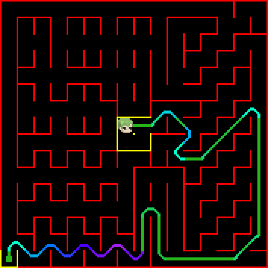
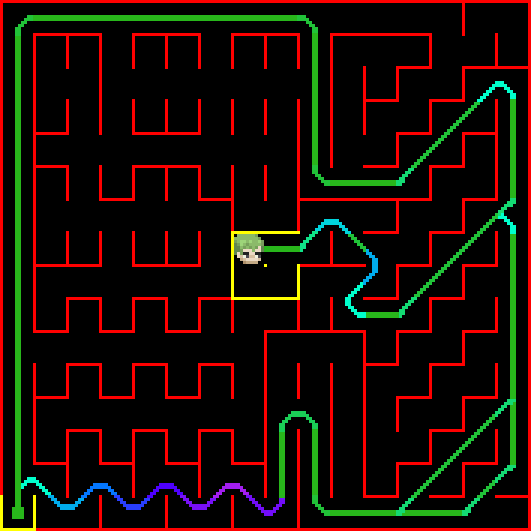
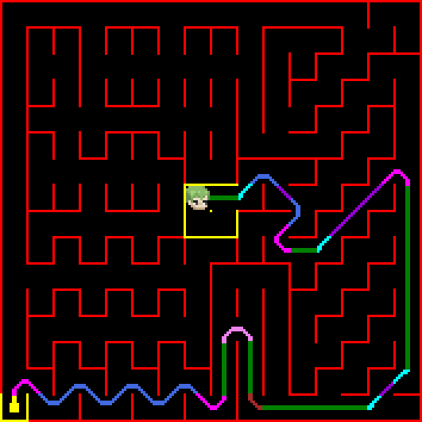
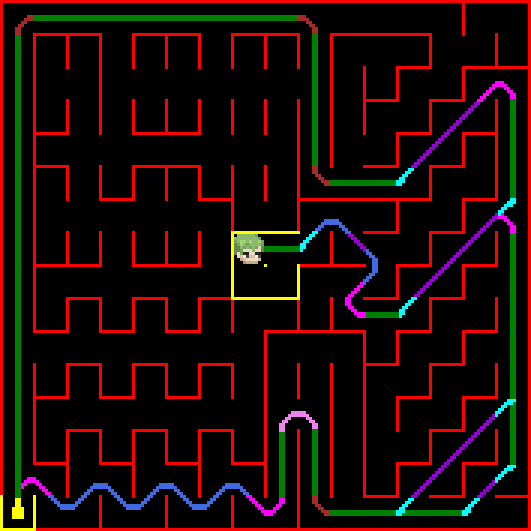
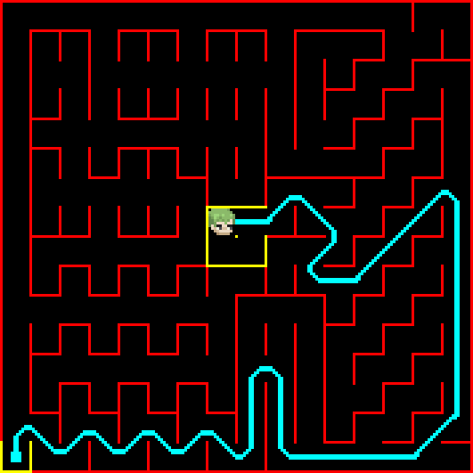
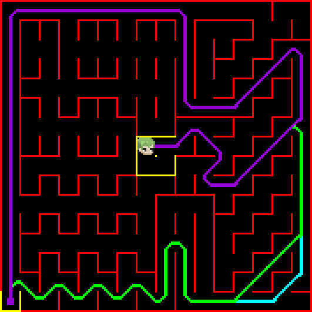
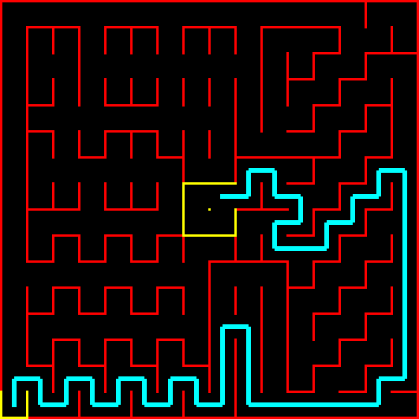
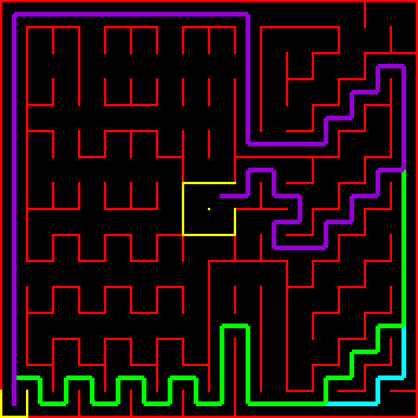

ZoroBot3: Paths Visualizer
Este proyecto permite visualizar lo que hara nuestro robot ZoroBot3 en cualquier laberinto utilizando sus algoritmos de resolucion, con sprites personalizados y rutas coloreadas. Permite generar imágenes de las ejecuciones del simulador, tanto en Google Colab como en terminal (Windows/Linux).
Características
- Visualización con sprites: Cada acción de ZoroBot (avance, giros, diagonales, zigzags..) se representa con un sprite único.
- Rutas coloreadas: Los segmentos y curvas se colorean según su tipo, con modos agrupado, único o por partes.
- Parsing robusto: Las acciones se extraen directamente del output del simulador de zoro.
- Multiplataforma: Funciona en Colab y terminal, windows o linux.
- Interfaz por argumentos: Permite uso flexible desde terminal.
Uso
Desde Google Colab
- Sube tu archivo de laberinto y el ejecutable del simulador.
- copia el codigo de este script en una celda del colab.
- Ejecuta el script y llama en otra celda a la función
main()con los parámetros deseados:
main(
map_path="Portuguese Micromouse Contest 2025.map",
sim_path="../maze_sim",
output_path="maze_paths.bmp",
floodfill_types=[0, 1, 2, 3], # Tipos de floodfill
explore_types=[0, 1, 2], # Tipo de exploración
render_mode="sprites", # "sprites" o "lines"
color_mode="parts" # "parts", "single" o "danger"
)
# Mostrar la imagen generada
from PIL import Image
from IPython.display import display
img = Image.open("maze_paths.bmp")
display(img)
img_grande = img.resize((img.width*3, img.height*3), Image.NEAREST)
display(img_grande)
Desde Terminal (Windows/Linux)
Ejecuta el script con argumentos:
python paths_visualizer.py --map "../simulator/mazes/maze.map" --sim "../simulator/maze_sim" --output "maze_paths.bmp" --floodfill 3 --explore 2 --render sprites --color parts
--map: Ruta al archivo de mapa--sim: Ruta al ejecutable del simulador--output: Nombre del archivo de imagen de salida--floodfill: Tipos de floodfill (0 1 2 3)--explore: Tipo de exploración (0 1 2)--render: Modo de renderizado (spritesolines)--color: Modo de color (parts,single,danger). Si hay más de un floodfill, se colorea automáticamente cada ruta distinta.
Ejemplo de Variaciones de Comando
1. Sprites Danger (movimientos coloreados según peligrosidad del recorrido)
| Un camino | Varios caminos |
|---|---|
 |
 |
2. Sprites Parts (subpartes marcadas con un color distinto por cada movimiento)
| Un camino | Varios caminos |
|---|---|
 |
 |
3. Sprites Single (movimientos reales de Zoro, un color por recorrido)
| Un camino | Varios caminos |
|---|---|
 |
 |
4. Lines (recorridos marcados solo con giros de 90º, un color por recorrido)
| Un camino | Varios caminos |
|---|---|
 |
 |
Utilidades de Imagen (/utils/img_utils.py)
- bmp_to_sprite_array: Convierte archivos .bmp monocromáticos a arrays hexadecimales de sprites con preview ASCII.
- bmp_to_color_matrix: Convierte archivos .bmp a matrices RGB para sprites a color.
- color_matrix_to_image: Muestra matrices RGB como imágenes (útil para previsualizar sprites).
Nota:
- Coloca los archivos .bmp de sprites en la carpeta
utils/sprites/para usar la conversión automática. - Los .bmp deben ser de 12x12 o 23x12 píxeles monocromaticos para funcionar en el conversor.
Requisitos
- Python 3
- Librerías:
- Pillow
- matplotlib